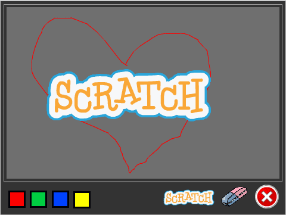
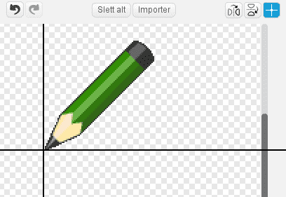

I dette prosjektet lager vi et tegneprogram slik at du etterpå kan
lage din egen kunst. Du kan tegne med forskjellige farger, bruke
viskelær, lage stempler og mye mer!

Forberedelser: Last ned bildefiler
Denne første delen kan du godt få hjelp fra en voksen til å gjøre!
Sjekkliste
Steg 1: Dra og tegn!
Vi starter med å lage en blyant som tegner når du drar den rundt på
scenen.
Sjekkliste

når grønt flagg klikkes
for alltid
gå til [musepeker v]
slutt
Nå vil vi bruke denne blyantfiguren som en ordentlig blyant. Om du ser
under Penn-kategorien kan du se mange slags
tegnefunksjoner. De vi er interessert i nå er penn på og
penn av.
når grønt flagg klikkes
for alltid
gå til [musepeker v]
hvis <museknappen er nede?>
penn på
ellers
penn av
slutt
slutt
Test prosjektet ditt
Klikk på det grønne flagget.
Sjekkliste
når grønt flagg klikkes
slett
for alltid
gå til [musepeker v]
hvis <museknappen er nede?>
penn på
ellers
penn av
slutt
slutt
Test prosjektet ditt
Klikk på det grønne flagget.
Steg 2: Rydde opp
I stedet for å måtte starte og stoppe prosjektet for å slette tavla
kan vi lage en knapp som sletter alt i stedet.
Vi kan fortsatt bruke slett-klossen.
Sjekkliste
når denne figuren klikkes
slett
Test prosjektet ditt
Klikk på det grønne flagget.
Steg 3: Bytte farge
Til nå har vi bare kunnet tegne blå streker. Vi kan bruke andre farger
også!
Vi legger til noen figurer på bunnen av skjermen. Figurene vil se ut
som fargede knapper. Når vi klikker på en knapp endres blyantfargen
til den fargen knappen har. For å vise at vi har byttet farge skal vi
gjøre det slik at blyanten også skifter farge.
Sjekkliste
når denne figuren klikkes
send melding [Rød v]
Dette er alt denne figuren gjør. Det vanskelige arbeidet gjøres av
blyanten.
når jeg mottar [Rød v]
bytt drakt til [red-pencil v]
velg pennfarge [#FF0000]
For å velge fargen i velg pennfarge-klossen kan du
først klikke i fargeruten på klossen, og deretter på den røde
knappen du lagde på scenen tidligere.
Test prosjektet ditt
Klikk på det grønne flagget.
Sjekkliste
Test prosjektet ditt
Klikk på det grønne flagget.
Steg 4: Bare tegne på tavla
Du har sikkert lagt merke til at man kan tegne over hele scenen, og
det blir jo litt rotete. Skal vi begrense skriblingen til bare den
lysegrå tavla må vi sette grenser for hvor blyanten kan gå.
Du husker kanskje at Scratch definerer punkter på scenen ved hjelp av
x- og y-koordinater. Når du flytter musepekeren rundt omkring vil
du se disse verdiene nedenfor det høyre hjørnet av scenen.
For å finne ut hvor grensene for tavla går kan vi begynne nede i det
venstre hjørnet. Da står det x: -230 og y: 120. Flytter vi
pekeren rett bort til det høyre hjørnet ser vi at y er uforandret,
mens x har blitt til 230. Da vet vi at x-koordinatene går fra
-230 til 230. y-koordinatene finner vi ved å flytte pekeren opp
til toppen av tavla. Da kan vi lese av at y-koordinatene går fra
-120 til 170.
Disse verdiene kan vi bruke inne i en hvis-kloss, og
si at når musepekeren er utenfor tavlas x- og y-koordinater, så
virker ikke blyanten.
Sjekkliste
når grønt flagg klikkes
slett
for alltid
hvis <<<(mus x) > [-230]> og <(mus x) < [230]>> og <<(mus y) > [-120]> og <(mus y) < [170]>>>
gå til [musepeker v]
hvis <museknappen er nede?>
penn på
ellers
penn av
slutt
slutt
slutt
når grønt flagg klikkes
slett
for alltid
hvis <<<(mus x) > [-230]> og <(mus x) < [230]>> og <<(mus y) > [-120]> og <(mus y) < [170]>>>
gå til [musepeker v]
vis
hvis <museknappen er nede?>
penn på
ellers
penn av
slutt
ellers
skjul
penn av
slutt
slutt
Fordi blyanten vil skjules når pekeren går utenfor tavla, må vi få
den til å vises igjen når den kommer innenfor. Pass derfor på at
du får lagt inn en vis-kommando innenfor
hvis-klossen.
Vi har også lagt på en penn av-kloss når blyanten er
utenfor tavla, for at den ikke skal tegne en strek akkurat i det
den kommer tilbake inn på tavla.
Test prosjektet ditt
Klikk på det grønne flagget.
Steg 5: Viskelær
Nå kan vi tegne hva vi vil. Men hva om vi trenger et viskelær?
Hmm… da kan vi jo bare få blyanten til å tegne med samme farge som
tavla! Og så gir vi blyanten en viskelærdrakt!
Sjekkliste
når denne figuren klikkes
send melding [Visk v]
når jeg mottar [Visk v]
bytt drakt til [eraser v]
velg pennfarge [#606060]
Test prosjektet ditt
Klikk på det grønne flagget.
Steg 6: Stempel
Nå skal vi lage et stempel som kan lage små avtrykk på tavla.
Sjekkliste
når denne figuren klikkes
send melding [Stempel v]
når jeg mottar [Stempel v]
bytt drakt til [scratch logo v]
sett [stempelmodus v] til [på]
når jeg mottar [Visk v]
bytt drakt til [eraser v]
velg pennfarge [#606060]
sett [stempelmodus v] til [av]
når grønt flagg klikkes
slett
for alltid
hvis <<<(mus x) > [-230]> og <(mus x) < [230]>> og <<(mus y) > [-120]> og <(mus y) < [170]>>>
gå til [musepeker v]
vis
hvis <museknappen er nede?>
hvis <(stempelmodus) = [på]>
stemple avtrykk
ellers
penn på
slutt
ellers
penn av
slutt
ellers
skjul
penn av
slutt
slutt
Test prosjektet ditt
Klikk på det grønne flagget.
Lagre prosjektet
Veldig bra jobba! Du er nå ferdig med programmet.
Du kan også prøve disse utfordringene!
Utfordring 1: Regnbueblyant
I denne utfordringen skal du legge til en blyant som kan forandrer
farge mens du tegner. Kult, ikke sant?
Først må du legge til regnbue-knappen og regnbue-drakten:
Hint: Du har sikkert fått ting til å forandre seg med jevne
mellomrom i tidligere prosjekter, for eksempel tid eller poeng. I
dette tilfellet kan du gjøre nesten det samme, men passe på at det er
pennfarge som endrer seg.
Klossen som endrer pennfargen må legges inn i en løkke. Men du trenger
også noe å kontrollere løkken med, slik at den bare endrer farge når
regnbueblyanten er valgt.
Hint: Du kan gjøre dette på en måte som ligner på hvordan
stempelmodus styrer når stempelet skal skrues av og
på. Prøv å lage en variabel som du kaller regnbuemodus.
La denne skrues på når regnbueblyanten klikkes, og av når de andre
fargene velges.
Test prosjektet ditt
Klikk på det grønne flagget.
Utfordring 2: Snarveier
Nå skal du prøve deg på å lage snarveier på tastaturet. Det betyr at
man i stedet for å klikke på knappene på skjermen kan bruke tastene
for å bytte farge, stemple og viske ut.
Du kan bruke hvistast _ trykket? for
å benytte tastaturet. For hver tast du legger til trenger du en ny
hvistast _ trykket?-kloss som sender
de samme meldingene som verktøy-valgene gjør når de klikkes. Legg til
skriptene på scenen.
Vi har brukt disse snarveiene:
Rød blyant - r, Grønn blyant - g, Blå blyant - b, Gul blyant -
y, Regnbue blyant - w, Stempel - s, Visk - v, Slett alt - a
Test prosjektet ditt
Klikk på det grønne flagget.
Utfordring 3: Større og mindre
En annen funksjon som tegneprogrammer gjerne har er å forandre
størrelsen på blyantstreken. Prøv å se om du får til dette.
Det er en ting som gjør dette vanskelig. Noen ganger trenger vi å
endre størrelsen på blyantstreken og noen ganger trenger vi å forandre
størrelsen på drakten. Det er avhengig av om du bruker blyanten eller
stemplet.
Hint: Du kan bruke noen av endre-klossene under
Penn eller Utseende. For å forminske
setter du bare et minustegn foran tallet.
Hint: For å holde styr på om det er blyantstreken eller
stempelet som skal endres må du bruke en hvis - ellers-kloss.
Test prosjektet ditt
Klikk på det grønne flagget.
Lagre prosjektet
Veldig, veldig bra! Nå kan du tegne akkurat det du vil!
Ikke glem å del spillet ditt med venner og familie ved å trykke på
Legg ut i menyen!
Forbedre denne siden
Funnet en feil? Kunne noe vært bedre? Hvis ja, vennligst gi oss tilbakemelding ved å lage en sak på Github eller fiks feilen selv om du kan. Vi er takknemlige for enhver tilbakemelding!